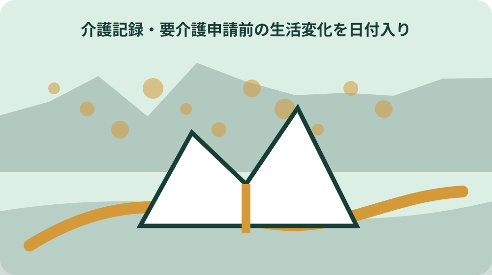
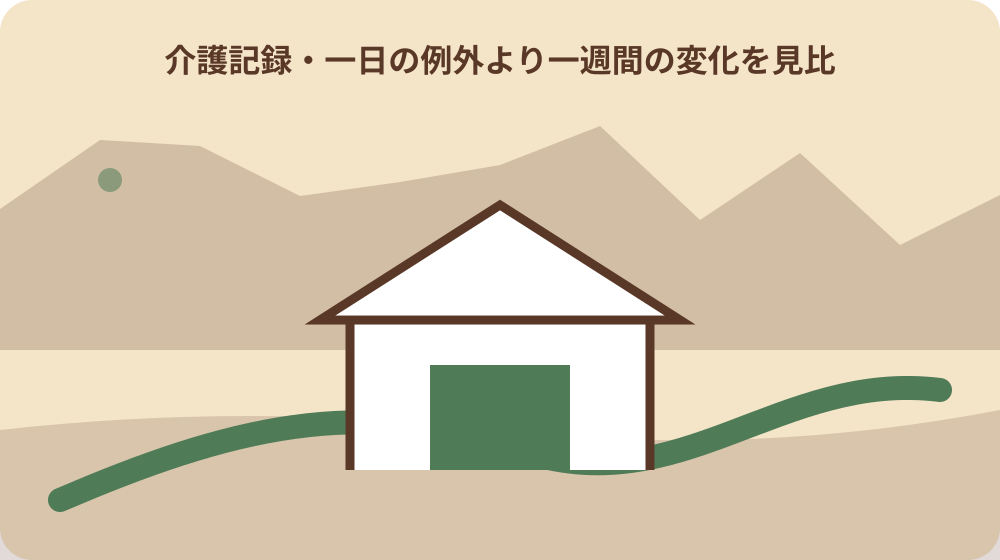

先に結論を確認する
この記事の答え：はい。起床、食事、服薬、排せつ、入浴、移動、外出などで以前と違った事実を日付入りで残せます。診断名や認定区分は推測せず、相談時の説明材料として扱います。
森町で最初に照合する条件：観察対象者、観察日、場所、見守りまたは介助をした人を一件ごとに特定する。
申請前の記録は要介護度の予想表にしない
森町公式では、町への申請、訪問調査、主治医意見書、介護認定審査会の審査を経て区分が決まる流れを示しています。家族が作る生活変化の記録は、要介護度を先に当てる表ではありません。いつ、どの場面で、何が以前と変わったかを相談相手へ正確に渡すための観察票です。
記録を始める日は、本人の氏名、記録者、普段過ごす場所、比較する時期を表紙へ書きます。「最近弱った」のような総評だけでは開始点が分かりません。「7月までは自分で玄関を出た」「8月3日は靴を履く時に支えた」のように、比較できる動作へ置き換えます。
森町の判定区分は非該当、要支援1・2、要介護1から5までですが、家族は区分名を各日の欄へ書かないようにします。制度上の判定と家庭内の心配を混ぜると、観察した事実が見えにくくなるからです。区分は町から届く結果通知で確認する事項として空けておきます。
病名、認定の見込み、必要なサービスを家族だけで断定しないことも大切です。記録に書くのは、本人の発言、見た動き、かかった時間、手を貸した内容です。緊急性がある症状や転倒は記録を完成させるまで待たず、医療機関や相談先へ連絡した時刻も同じ行へ残します。
起床から就寝までを同じ八つの生活場面で見る
毎日の欄は、起床、食事、服薬、排せつ、入浴、屋内移動、外出、就寝の八場面にそろえると変化を追いやすくなります。すべてを長文で書く必要はありません。変化がなかった欄は丸、変化があった欄は短い事実と時刻を書き、後から家族が同じ意味で読める凡例を付けます。
食事なら献立の感想だけでなく、配膳後に食べ始められたか、箸や器を扱えたか、むせがあったか、食べ終えるまで何分かかったかを見ます。排せつなら回数の多寡だけでなく、トイレまでの移動、衣服の上げ下げ、後始末のどこで声掛けや支えが要ったかを分けます。
森町内でも山間部、中心部、家族と同居する家、日中独居になる家では生活の組み立てが違います。地区名から負担を決めつけず、買物、通院、ごみ出し、玄関から道路までの移動を実際の一週間で確認します。天候や送迎者の有無も、動作が変わった背景として日付と一緒に残します。
八場面の枠は本人を監視するためではなく、家族の記憶違いを減らす道具です。本人が書ける日は本人欄を設け、困っていないと感じる場面も残します。家族の都合だけで「できない」と評価せず、本人の希望を次の相談へ持ち越せる構成にします。
できた・できないの間に介助量を四段階で置く
生活動作を二択にすると、見守りだけ必要な日と身体を支えた日が同じ「できない」になります。記録では、自分で行った、声掛けで行った、道具や一部の支えで行った、ほぼ全体を手伝った、の四段階を設けます。これは家庭内の整理用であり、町の認定基準そのものではないと欄外へ明記します。
声掛けには「朝食の薬は机の右側です」と場所を知らせた場合と、何度も促してようやく服用した場合があります。どちらも同じ記号にせず、回数と結果を短く書きます。身体介助では、腕を持った、腰を支えた、車いすへ移したなど、触れた部位と動作を具体化します。
所要時間も変化を表します。以前は着替えが十分だったのに二十分かかるようになった場合、完了だけ見れば「できた」でも生活負担は増えています。時計で測れない日は「朝食前から食後まで」のように前後関係を書き、正確でない分数を作らないようにします。
介助者の違いも残します。配偶者ならできたが別居の子には拒否した、手すりがある浴室では動けたが別の場所では支えが要った、という差は環境を整える材料です。個人の性格と決めつけず、誰とどこで何を使ったかを一組にして相談先へ伝えます。

本人の言葉と家族の観察を二つの欄へ分ける
本人が「一人で歩けた」と話し、家族は壁に手をついた様子を見た場合、どちらかを誤りとして消しません。本人欄には発言をかぎ括弧で残し、観察欄には立ち上がり、歩数、つかまった場所を書きます。二つの情報が違うこと自体が、相談時に生活を理解する手掛かりになります。
家族の評価は第三欄に分けます。「危ないと思った」「前週より疲れて見えた」は観察事実ではなく記録者の受け止めです。私見と分かる語尾にし、根拠になった動作を隣へ置きます。こうすると、別の家族が読んだ時に感想だけが一人歩きするのを防げます。
本人が記録を嫌がる場合は、目的と共有範囲を説明します。認定を取るために悪い日だけ集めるのではなく、暮らしで困る場面を相談しやすくするためだと伝えます。見せたくない内容や写真を無断で家族グループへ送らず、原本の保管者と共有する相手を表紙に記します。
認知機能への心配があっても、家族が診断名を付けないことが原則です。「同じ質問を午前中に三回した」「財布を冷蔵庫へ置き、午後に探した」のように日時と出来事へ戻します。診断や治療については医療機関へ、生活全体の相談は森町地域包括支援センターへつなぎます。
転倒や服薬忘れは時刻と直前の状況まで残す
転倒は「転んだ」だけで終えず、発見時刻、場所、履物、照明、床の状態、直前の移動目的、立ち上がりに必要だった助けを残します。けがや痛みがある場合は受診や連絡を優先し、記録には受診先と連絡時刻だけを追記します。原因を段差や病気の一つに決めるのは専門家の確認後です。
服薬は薬名を家族の記憶だけで書かず、お薬手帳や処方袋と照合します。飲み忘れを見つけた時刻、本人の説明、残っていた薬、家族がした連絡を分けます。飲み直しを自己判断するための表ではありません。対応は医師や薬剤師の指示を確認し、その回答者と時刻を記録します。
急な発熱、呼吸の苦しさ、意識の変化などがある時は、一週間分の表を埋めることより救急相談や受診が先です。生活変化の記録は緊急判断を代替しません。家族が迷った時間も含め、誰がどこへ電話し、どの指示を受けたかを後から追える形にします。
小さな出来事でも繰り返しが見えると相談材料になります。玄関でつまずいた、夜中にトイレを探した、昼食を忘れたといった事実を同じ分類で残します。ただし、本人の尊厳を損なう表現や家族内の非難は避け、必要な支えを考えるための記録だと共有します。
一日の例外より一週間の変化を見比べる
一日だけ調子が悪い時と、少しずつ介助が増えた時を分けるには、少なくとも連続する日付を横に並べます。晴雨、通院、来客、睡眠不足など特別な条件も添えます。良い日を省くと普段の幅が伝わらないため、自分でできた日も同じ尺度で記録します。
週末に家族が集まる家では、平日の独居時と支えがある休日を別に見ます。食事が用意されていれば食べられるのか、買物と調理まで一人でできるのかは異なる生活課題です。結果だけでなく、生活が成り立つまでに誰が何分使ったかを見えるようにします。
同居家族が無意識にしている支えも数えます。薬箱を並べる、浴槽へ湯を張る、通院を予約する、車を運転する行為は本人の動作とは別の家族負担です。本人の能力を低く書くためではなく、支えがなくなった日に何が止まるかを相談相手と検討するためです。
一週間の要約は、増えた介助、変わらない動作、本人が続けたいこと、緊急に相談したいことの四枠にします。全日誌を電話口で読み上げるより、要約を先に伝え、必要な日付を後から示す方が話が整理されます。原本は修正履歴を残し、要約で都合の悪い日を消さないようにします。
主治医へ伝える症状と暮らしの困り事を結ぶ
森町は申請書に記載された主治医へ町から意見書作成を依頼すると案内しています。家族の役目は意見書を代わりに判断することではなく、診察室だけでは見えにくい日常を、受診時に短く伝えられるようにすることです。主治医名、医療機関、最終受診日を申請前に照合します。
痛みなら部位と強さの印象だけでなく、立ち上がりや階段、睡眠、食事にどう影響したかを結びます。物忘れなら抽象的な評価を避け、同じ質問の回数や火の消し忘れを確認した日時を書きます。家族の観察と本人の訴えが異なる時は、双方をそのまま示します。
複数の医療機関へ通っている場合、誰を主治医欄へ記すかを家族だけで決めない方が安全です。森町福祉課介護保険係へ申請前に確認し、各医療機関の診療科、薬、連絡先を一覧にします。受診歴が古い場合も隠さず、最後に確認できた日を添えます。
町が案内する利用者または家族向けアンケートは、主治医が意見書を作成する際の参考資料です。最新様式を公式ページまたは窓口で確認し、生活記録から必要事項を転記します。アンケートへ書いた内容と日誌の日付がずれた時は上書きせず、訂正理由が分かるようにします。
地域包括支援センターへ相談する前に一枚へ要約する
森町地域包括支援センターは町が運営し、高齢者本人、家族、地域住民、ケアマネジャーなどから生活、健康、財産管理、介護疲れを含む相談を受けています。申請を決める前でも、何に困っているかを一枚へまとめれば、相談の入口を選びやすくなります。
要約には、本人が続けたい暮らし、直近一週間で増えた支え、転倒などの安全上の出来事、受診状況、同居・別居家族の連絡先を書きます。家の住所と本人の居場所が違う場合は両方を記し、入院中なら病院名と病棟を確認します。個人番号など不要な情報は載せません。
窓口は森町森50番地の1の保健福祉センター内で、通常の受付は祝日と年末年始を除く月曜から金曜の午前8時30分から午後5時15分です。時間外は役場宿日直の案内があります。ただし緊急の医療対応を同センターだけに委ねず、症状に応じた連絡先を選びます。
電話した日、対応者、伝えた要約、次の連絡日を記録へ戻します。「相談済み」だけでは、別の家族が何を待っているか分かりません。申請書を出すのか、医療機関へ確認するのか、家庭訪問を相談するのかを一つずつ書き、未定事項は未定と明示します。
申請日から逆算して証書と主治医名を確かめる
申請を進める段階では、生活日誌とは別に提出物のチェック欄を作ります。森町公式は新規・更新と区分変更で申請書を分け、介護保険被保険者証を必要書類として案内しています。40歳から64歳までの第2号被保険者は医療保険証の条件もあるため、対象を確認します。
窓口は保健福祉センター内の福祉課介護保険係です。ウェブで様式を入手した日と提出予定日が離れる場合は、直前に最新版を確かめます。主治医の氏名は診察券の病院名だけで済ませず、申請書へ記載できる表記を医療機関または町へ確認します。
結果は原則として申請から30日以内に通知され、期間内に通知できない見込みなら認定延期通知書が送付されると森町は説明しています。家族の予定表には申請日、受領控えの保管場所、連絡を受ける人を書き、30日を必ず確定日と誤解しないようにします。
申請を急ぐ状況では、完全な日誌を作ることを提出条件にしません。すでに分かる一週間の変化と緊急度を相談し、足りない記録は後から追記します。書類が整うまで支援相談を止めないこと、古い様式や家族の記憶で必要物を断定しないことを共通ルールにします。

認定調査当日は普段の状態を記録から説明する
森町公式では、認定調査員が自宅や病院などを訪問し、申請者の心身の状態を調査するとしています。当日だけ緊張して普段より動ける、反対に疲れて動けないこともあります。日誌から良い日と難しい日の両方を示し、一場面だけで日常全体を説明しないようにします。
家族が同席する場合は、本人の前で否定や非難を重ねないよう事前に役割を決めます。本人が答えた後、日付のある補足を短く伝えます。本人の意向に配慮しながら、夜間の様子や介助者の負担など本人が見ていない事項をどの場面で説明するか、調査員へ相談します。
見せる資料は、一週間要約、服薬一覧、転倒などの出来事表、家族がしている支えの一覧です。大量の写真や動画は、撮影日と目的が分かるものだけに絞ります。提出を求められていない資料を当然に渡すのではなく、どの情報が必要かを確認します。
調査後は、質問された事項、追加確認が必要な資料、連絡先をその日のうちに残します。家族が調査内容から認定区分を予想して周囲へ確定情報として伝えないことも重要です。認定調査結果と主治医意見書を基に審査会が審査し、正式な結果は町の通知で確認します。
家族に残す介護前カルテを更新できる形にする
家族用カルテの表紙には、本人の住所と現在地、緊急連絡先、主治医、薬局、森町の相談先、介護保険被保険者証の保管場所を書きます。証書番号や医療情報を家族全員へ無制限に送らず、閲覧できる人と原本管理者を決めます。紙とデータの更新日をそろえます。
生活日誌は上書きせず、日付順に追加します。誤記は元の内容を読める形で訂正し、訂正者と日を残します。写真名には撮影日と場面を付け、本文から参照できる番号にします。本人の発言を後から家族の言葉へ直さず、追記欄で補足します。
家の情報も介護と無関係ではありません。玄関の段差、廊下幅、手すり、寝室からトイレまでの経路、駐車場所、道路から玄関までの傾斜を、改修を決める前の現況として記録します。所有者、工事承諾者、費用負担者が違う場合は三者を分け、未確認の名義を推測しません。
更新日は、退院、転倒、薬の変更、同居者の変更、サービス開始など生活条件が変わった時に設定します。売却や転居が未定でも、連絡先と家の現況がまとまっていれば家族会議に使えます。カルテは結論を急がせるものではなく、次の確認を同じ資料から始めるための台帳です。
大石の視点：家と介護の判断を同じ日に急がない
ここまでの申請手順、窓口、審査の流れは公式資料で確認できる事実です。一方、どの家で暮らし続けるか、改修するか、売るかは個別の判断です。私は小さな不動産業者として、生活変化が見えた日に家の処分まで同時に決める必要はないと考えます。これは私見です。
まず一週間の暮らし、家族が担っている移動、玄関や水回りの危険箇所、医療と介護の相談状況を別々に見ます。その後で道路、境界、登記名義、建物の状態、農地の有無を確認します。介護への不安を理由に査定額だけを先に出しても、本人の暮らしと家族の役割は整理されません。
売却未定でも実家カルテを作り、介護前カルテと参照番号で結ぶ方法があります。生活側には転倒した場所、家側には段差の写真と寸法を置きます。改修、見守り、短期的な家族支援、住替え、保有継続を同じ土台で比べられます。記録は選択肢を減らすためでなく残すために使います。
最終判断では本人の希望、介助者の継続可能性、費用、家の権利関係を分けて確認します。町の制度説明を物件ごとの結論へ広げず、現地未確認の境界や道路は未確認と記します。次の一歩は、今日起きた変化を一行書き、地域包括支援センターまたは福祉課へ尋ねる事項を一つ決めることです。